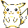

01 · KANTO
Pokémon Yellow
The best of the three originals: it rebalances the roster, has the sharpest sprites of the generation, lets Pikachu walk behind you outside its Poké Ball, and brings in the Team Rocket duo from the anime. This is the only stop on monochrome Game Boy — which is exactly why it earns a place. It is where all of it starts.
New this generation: all of it. 151 Pokémon, the original type chart, and a single Special stat that handled both special attack and special defence at once.
If it feels too rough: FireRed (GBA, 2004) tells the same story with modern mechanics. It is the better-built game by a distance — but it skips the Game Boy era entirely.
All 4 Generation I games
- Yellow (1998) — on the route
- Red · Blue (1996 / 1998) — Yellow is the refined cut of the same story
- Green (1996, Japan only) — never released outside Japan
